The last post in my User Science Journal is a summary of the story for my Goal Experiment Report.
Process
My goal was to create both two destination goals where any visitors reading my Week 8 Post: Goooaaaal! (and Funnel) would click on one of the hyperlinks I provided. The hyperlinks direct the visitor to two articles I found on popsci.com that showed a few Thanksgiving data analyses taken from individuals who used Google Maps during the week of Thanksgiving 2016 and Thanksgiving 2017. I choose this goal because found it relevant since the post was written during Thanksgiving week in 2018 plus, I wanted to include data analyses in my posts hoping that people would be interested to read conclusions derived from data taken from Google’s Maps API.
I implemented my goals in my site by following my professor’s instructional video to set up the WordPress GA Event’s Plugin. I added in a specific id to each element such as thanksgiving-2017 click to the article that had Thanksgiving 2017 trends and data then added thanksgiving-2016 click to the article that showed Thanksgiving 2016 data and trends. At this point, I went into the Google Analytics Scroll Events Plugin for WordPress and added each id above as a specific event for click tracking.
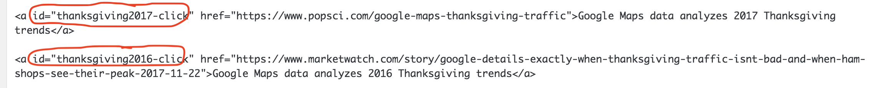 The unique ID added to specific HTML elements 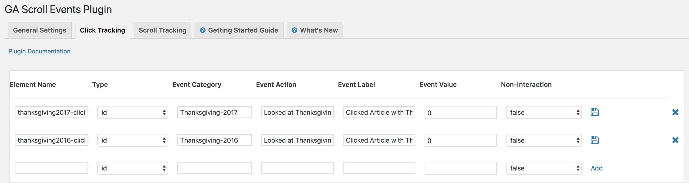 Activating and creating Google Analytics Click TrackingExperience
To implement my own Content Experiment, I first accessed the experiments option in the Behavior report in Google Analytics. Currently there is a Learn More option that directs a developer to the Google Optimize dashboard. I hypothesize that since this is still in beta testing that Google isn’t heavily marketing it right now for fear of alienating users who are using and most familiar with the current Google experiments features. For a detailed explanation on how to Set-Up a content experiment, please refer to my earlier post tilted Content Experiments
The results of my content experiment are as follows: my site got a total of 11 experiment sessions over the four days that the experiment was tested, Saturday December 1st, 2018 at 11pm PST to Wednesday December 5th, 2018 at 2pm PST. The overwhelming majority of my sessions were on Sunday December 2nd 2018 with seven registered hits. There was one session on December 4th and another three on December 5th which could be attributed to this is the most convenient time for my fellow classmates to visit our User Science Journals to complete their assigned peer reviews.
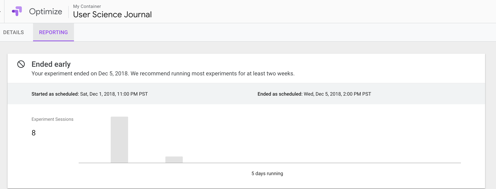 Google Analytics Optimize SummaryOverall looking at the remaining “cards” in the Reporting tab it appears that my data is not viable as I had zero conversions. As a result, I will briefly describe each card for educational purposes.
Improvement Card: compares the performance of the original site to the variant(s), with their percent improvement against the experiment’s objective(s).
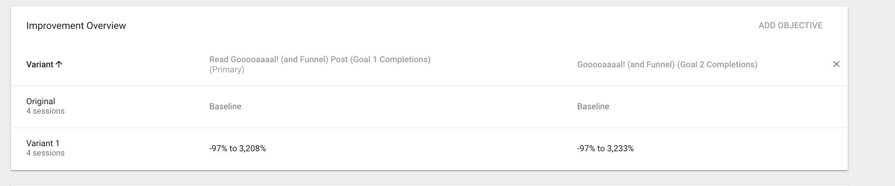 Google Analytics Optimize Improvement OverviewThe last tab is a simply graphical representation of conversion rate over time based upon the goal selected in the drop-down menu.
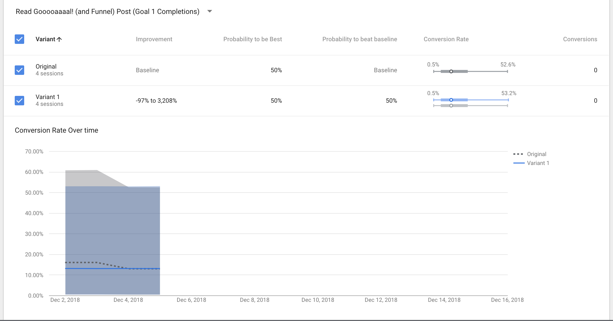 Google Analytics Optimize Conversion Rate over Time - Goal One 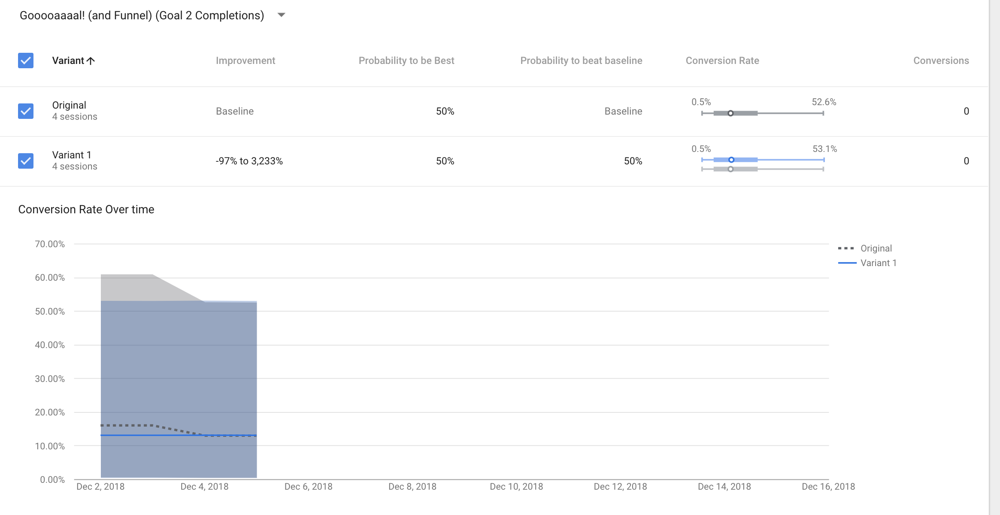 Google Analytics Optimize Conversion Rate over Time - Goal TwoMy next steps would be to change my goals to something more easily quantified such as session duration that would match approximately how long it takes an average user to read the post. I would also change the experiment duration to last at least two weeks per Google’s recommendations.
Conclusion
In conclusion, I was not successful in driving users to my goal for two reasons. Firstly, I set up my goals incorrectly in week 8 "Gooooaaaal! (and Funnel) and any completed goals were registered as events after checking all data the following week. Also, I had eleven experiment sessions over the 87 hours that my experiment lasted and did not have one successful conversion last week.
The two most logical reasons that I can think that hinders users from achieving my goal is 1) I set up my goal incorrectly, so Google Analytics doesn’t accurately register destination “click” hits as conversions or completed goals and this carries over into Google Optimize in some capacity. Additionally, the destination URLs on my page are too far down the page that the visitor loses interest before seeing them and leaves my site beforehand.
I personally find myself more comfortable with this data collection and usage as I see it a predominantly anonymous when being used for educational purposes however, I know that the functionality exists to easily track users by IP address and sites visited.
This could lead to sites and developers tracking people’s shopping purchases, personal viewing preferences (NSFW) and entertainment sites (social media) and potentially indirectly collecting personal data. Tracking social media sites would make it impossible not to track personal data that would deter users from trusting companies from collecting data that may be used for educational purposes to enhance the user experience for products and services.
As someone who is beginning the steps towards a web development career and culture yet is still predominately a consumer it is easy to resist any temptation to use less ethical means to convert users. I also would believe at this point in my education of web development and data analytics that using anything unethical to trick users to convert would result in invalid data that is useless to the developer, product manager and marketing team.
These tools are extremely useful to anyone who requires data collection and analysis for educational or commercial purposes. I can still see value in the data collected even in my experiment with zero experiment conversions and goals completed at three weeks into this project.
The attached images reveal that I had thirteen users visit my site over three weeks with 19 recorded sessions and an average session of 4 minutes and 27 seconds. My bounce rate is over 60% which is high and I cannot conclude that users found what they were looking for immediately since I had zero experiment conversions. Google Analytics also indicates that all but two of my users visited my site at 10am or late in the day.
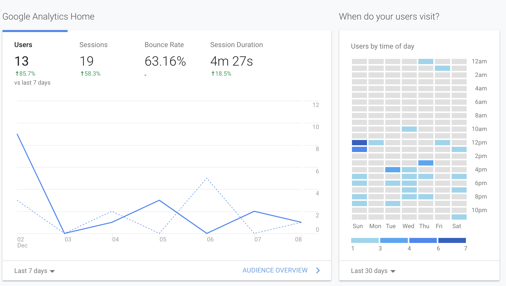 Audience Summary ReportGoogle Analytics also shows that all of my visitors are from the United States and 13 of my users were direct while the remaining were referrals.
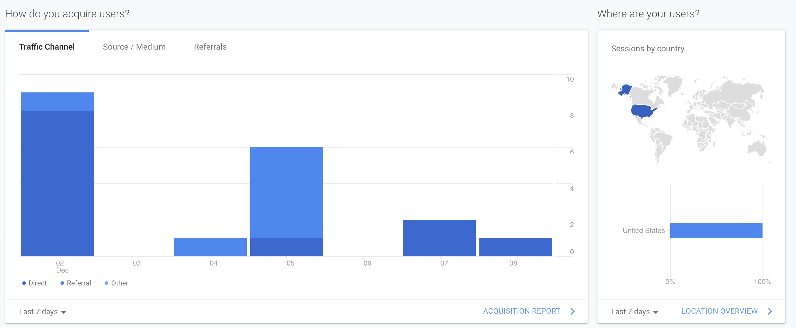 Audience Summary ReportThe views indicating which pages my users visit is a great source of information for developers to analyze and see which pages are attracting visitors as well as the best suited places to include goals or experiments to convert users.
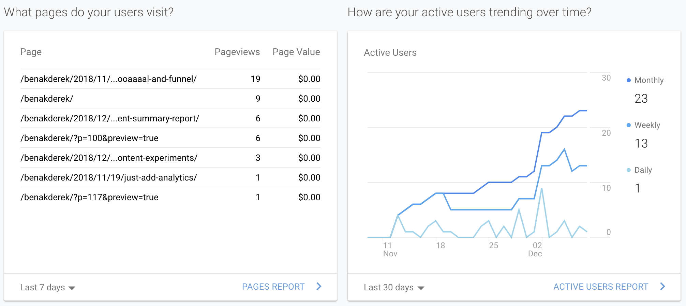 Active Users & Pages SummariesThe remaining metrics reveal the top devices visitors use to access my site as well as how well I or others would perform in retaining our visitors.
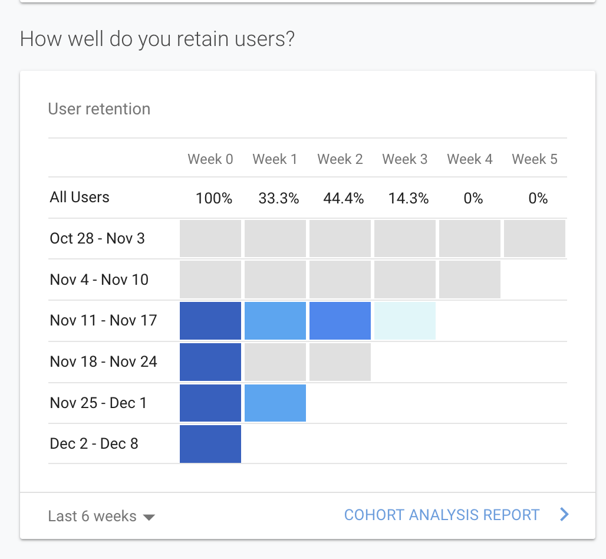 User Retention Summary 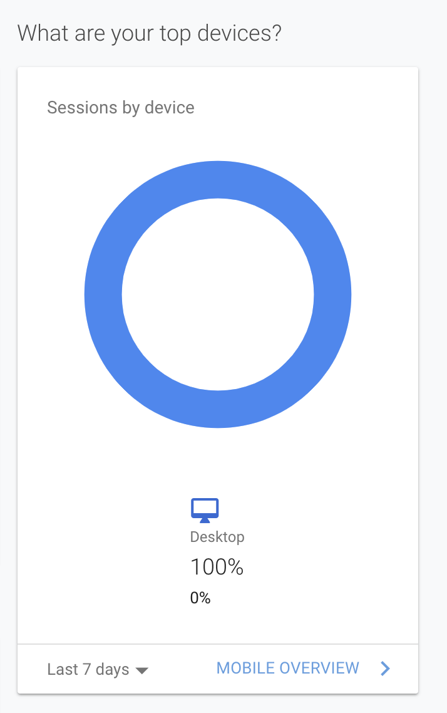 Most Used Devices